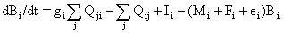

The basics of Ecosim consist of biomass dynamics expressed through a series of coupled differential equations. The equations are derived from the Ecopath master equation (see Equation 1), and take the form

Eq. 50where dBi/dt represents the growth rate during the time interval dt of group (i) in terms of its biomass, Bi, gi is the net growth efficiency (production/consumption ratio), Mi the non-predation (‘other’) natural mortality rate, Fi is fishing mortality rate, ei is emigration rate, Ii is immigration rate, (and ei·Bi-Ii is the net migration rate). The two summations estimates consumption rates, the first expressing the total consumption by group (i), and the second the predation by all predators on the same group (i). The consumption rates, Qji, are calculated based on the ‘foraging arena’ concept, where Bi’s are divided into vulnerable and invulnerable components (Walters et al., 1997 Figure 1), and it is the transfer rate (vij) between these two components that determines if control is top-down (i.e., Lotka-Volterra), bottom-up (i.e., donor-driven), or of an intermediate type.
The set of differential equations is solved in Ecosim using (by default) an Adams-Bashford integration routine or (if selected) a Runge-Kutta 4th order routine.
Further reading: Walters et al. 1997; Walters et al. 2000)